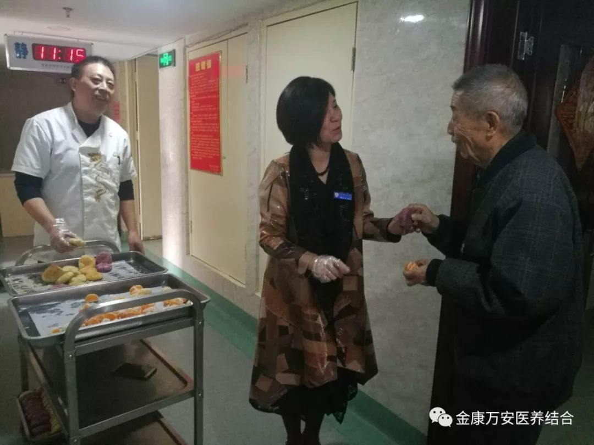
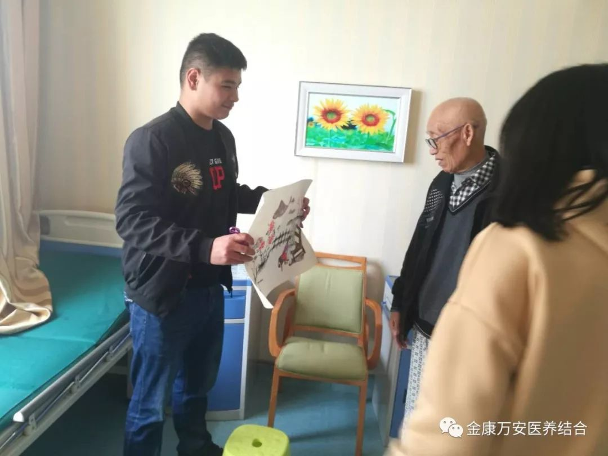

重阳佳节 爱满万安
人气: "" 时间：2018-10-17
树敬老之风，促社会文明。重阳节又为“老人节”、“敬老节”，在党和政府积极倡导以及社会各界的共同关注下，“尊老、爱老、敬老、助老”正日益成为文明社会动人的音符。
10月17号上午，业务院长银令令、后勤院长杨延顺早早的带着膳食科准备好的糕点、水果等爱心餐送给老人，让入住老人在这里感受到节日的祝福和家的温暖。
银院长和杨院长来到每个楼层，给每一位老人亲手送上糕点、水果，并亲手喂给不方便用手拿的老人。有的老人激动地不知道怎么表达，紧紧地握着他们的手一个劲的感谢。

银院长、杨院长为老人们送爱心糕点和水果
在这个充满爱的节日里，漯河医专的学子带着他们的爱心也来看望入住这里的爷爷、奶奶们。他们陪老人聊天、与老人互动，让入住老人在这个特殊的节日里感受到子孙相伴的温暖。

漯河医专的学子们看望老人
岁岁重阳，今又重阳。重阳佳节来临之际，金康万安全体医护人员、养老护理员祝愿全市老人身体健康、寿比南山、快乐永相伴！